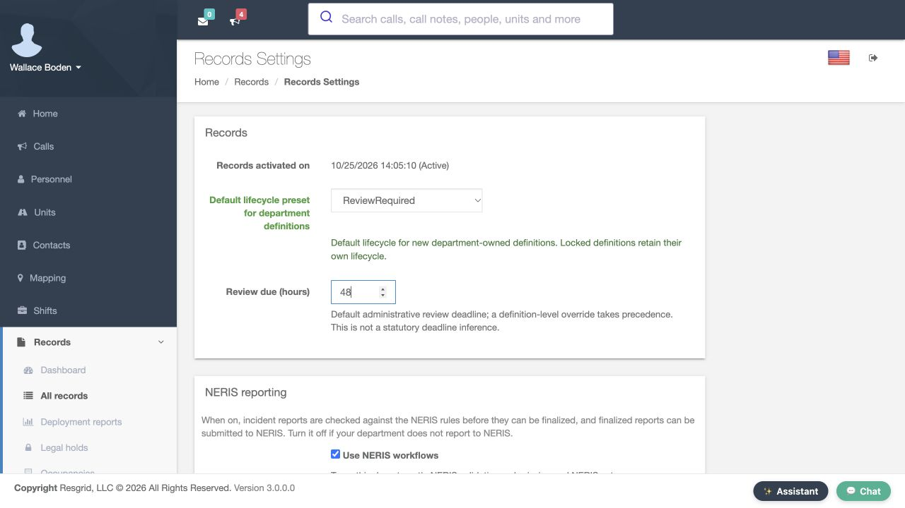
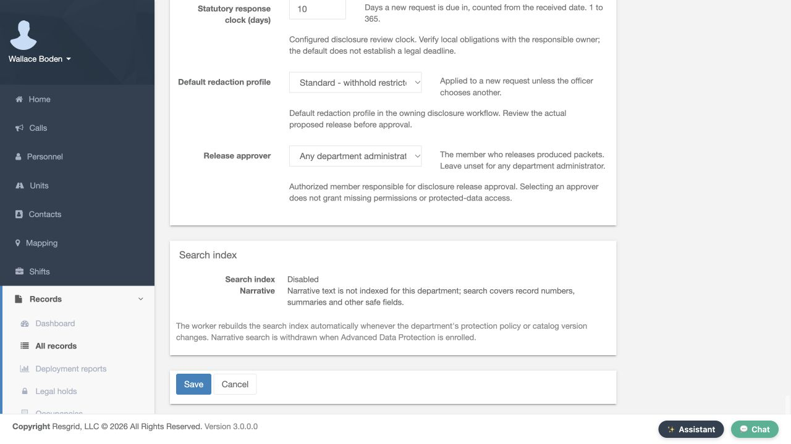
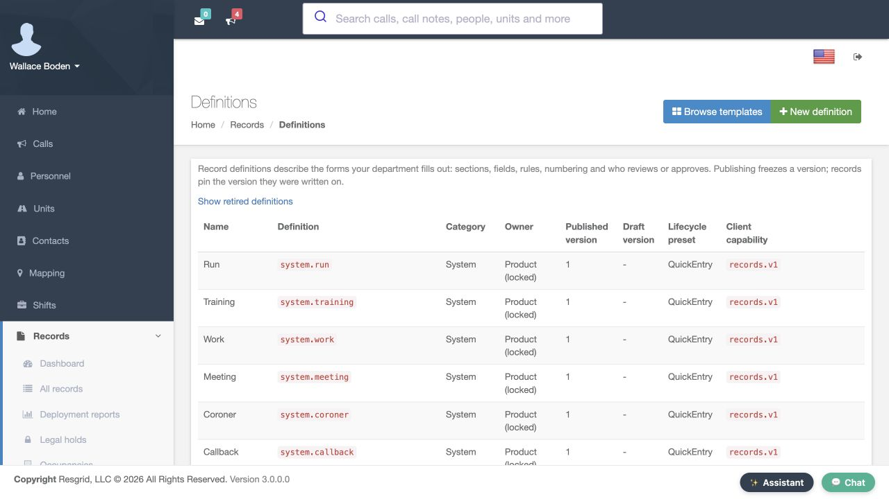
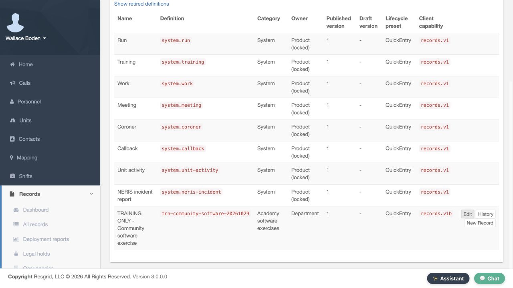
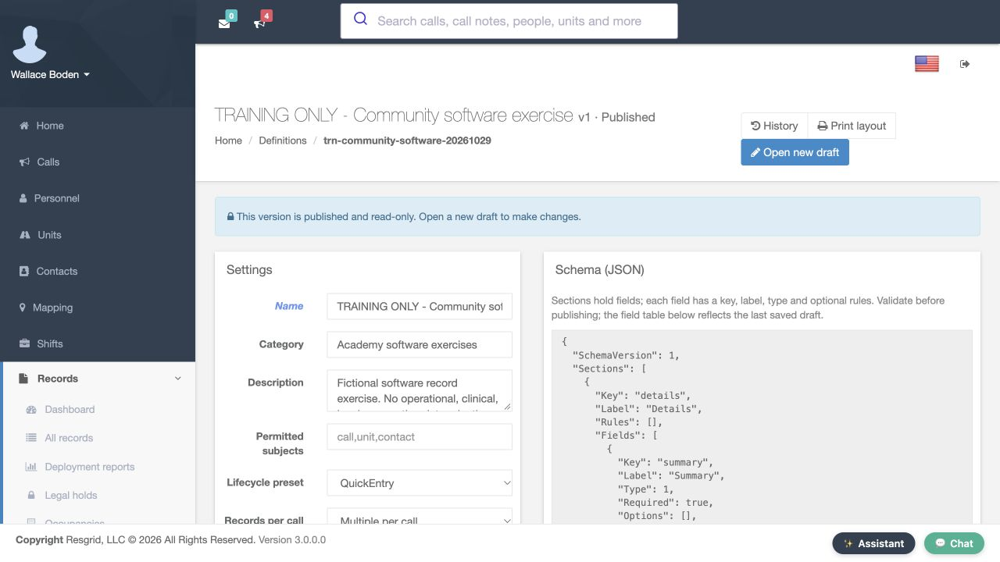
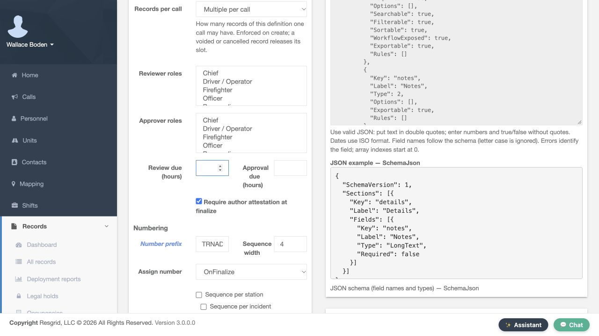
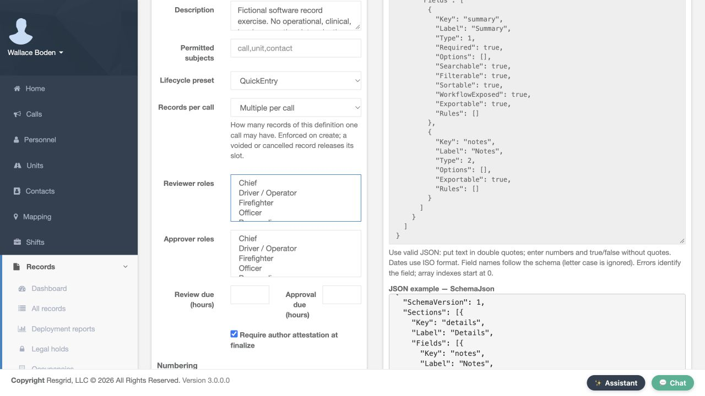
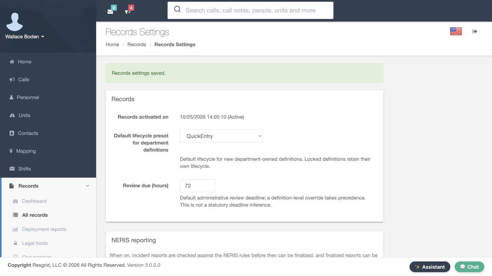

Core · Video walkthrough
Review Records defaults and definition-specific policy
Find Records Settings, save and verify lifecycle and review-deadline defaults, inspect existing definitions, then restore the practice values.
Before you begin
- An authorized Core session with the Records Manage menu, Settings and Definitions available.
- A separate training department and a recorded baseline before practicing settings changes.
- An agreed department review policy and responsibility for maintaining each record definition.
Chapters
- Find Settings from the Records Manage menu
- Record the lifecycle and deadline baseline
- Prepare the two practice values
- Save the reviewed practice change
- Read the saved result
- Reopen Settings to verify persistence
- Return to Manage and open Definitions
- Inspect the locked definition policies
- Find the department-owned example
- Read the published version before editing
- Locate the definition-specific review controls
- Prepare the original values for restoration
- Use Save for the restoration too
- Verify the original saved values
- Apply the verification process to your department
Watch the walkthrough
Step 1
Find Settings from the Records Manage menu
Records administration starts with finding the correct controls. In the Records area, open All records and choose Manage. The expanded menu contains Settings and Definitions. Settings holds department-level values; Definitions lets you inspect the forms and their own policies. Begin with Settings. This example uses the fictional Firehouse fifty-one training department, so the practice changes stay with a separate training environment.

Practice
Open All records, expand Manage and locate Settings and Definitions.
Step 2
Record the lifecycle and deadline baseline
On Records Settings, Default lifecycle preset for department definitions currently shows Quick Entry. Review due, in hours, is seventy-two. Record those baseline values before practicing. The displayed help says locked definitions retain their own lifecycle. It also says a definition-level deadline override takes precedence over the department deadline. This is an administrative review interval; the screen explicitly distinguishes it from a statutory deadline. Check the actual definition policy as well as this department form when planning a review process.
Practice
Read QuickEntry,72hours and both help statements before making a practice change.
Step 3
Prepare the two practice values
For this exercise, select Review Required in Default lifecycle preset for department definitions, then enter forty-eight in Review due, in hours. Both prepared values are visible together. Forty-eight hours is the training example, not a recommended deadline for every department. Choose an interval that matches your own review responsibilities. At this point the form is prepared but has not yet been saved.

Practice
Compare the prepared ReviewRequired and48hour values with the recorded baseline.
Step 4
Save the reviewed practice change
Scroll to the bottom of Records Settings. Save and Cancel are visible below the other settings sections. Review the intended change, then choose Save once. Typing a value into a field only prepares the form. The returned page and a fresh page load give you a separate check that the intended values were accepted and retained.

Practice
Identify the actual Save action at the bottom of the settings form.
Step 5
Read the saved result
The returned page displays Records settings saved. The lifecycle field shows Review Required, and the review deadline shows forty-eight. Compare both saved values with the two values you intended to change. A success notice helps, and inspecting the fields confirms which configuration is now displayed.
Practice
Read the success notice and verify both returned field values.
Step 6
Reopen Settings to verify persistence
Reopening Records Settings shows Review Required and forty-eight hours again. This is a fresh page load after the save. It confirms that the department form retained those values. The next check is the policy on existing record definitions. A saved department value alone does not tell you the lifecycle shown by every form that personnel can use.
Practice
Verify the same two values after reopening the page.
Step 7
Return to Manage and open Definitions
Return to All records and expand Manage again. Choose Definitions from this menu to inspect the record forms. This keeps the department settings check separate from the definition check, while giving administrators a repeatable route to both screens.
Practice
Use the visible Manage menu to locate Definitions.
Step 8
Inspect the locked definition policies
The Definitions table includes Owner, Published version and Lifecycle preset columns. Run and Training are marked Product, locked. Both show published version one and Quick Entry. This screen was captured while the department form had the saved Review Required value. The locked definitions still show their own Quick Entry policy, matching the scope described in the department settings help. Read the row you actually intend to use.

Practice
Compare the locked Run and Training rows with the saved department value.
Step 9
Find the department-owned example
In the same table, locate Training Only, Community software exercise. Its owner is Department, and its lifecycle column shows Quick Entry. The row has an Edit link. Choose Edit to inspect that definition version. Use the definition name and owner to distinguish a department-owned form from a locked product form before deciding which policy you are maintaining.

Practice
Locate the fictional department-owned definition and its Edit link.
Step 10
Read the published version before editing
The definition page identifies version one as Published. Its notice says this version is published and read-only, and it offers Open new draft for changes. Lifecycle preset still shows Quick Entry on this existing published definition. Review the version you are inspecting before planning an edit. This walkthrough reads the existing policy; it leaves Open new draft available for a separate definition-change exercise.

Practice
Read the Published notice, Open new draft action and existing lifecycle value.
Step 11
Locate the definition-specific review controls
Farther down the same definition page are Reviewer roles, Approver roles and Review due, in hours. The review deadline field is blank in this example. These are definition-specific controls to inspect when deciding how that form should be reviewed. The department settings help explains the precedence of a definition-level deadline override. Keep role assignments, the selected lifecycle and the review interval consistent with the people responsible for the process. This inspection does not change the published version.


Practice
Locate the role controls and blank review-deadline field on the existing definition.
Step 12
Prepare the original values for restoration
Return to Records Settings after the exercise. The prepared restoration selects Quick Entry and enters seventy-two hours, matching the baseline. Compare both fields with the values you recorded at the start. Restoring a practice change should be an intentional configuration decision, using the same review of the complete form as the original change.
Practice
Compare the prepared QuickEntry and72hour restoration with the baseline.
Step 13
Use Save for the restoration too
Use the same Save action at the bottom of the settings form to apply the restoration. The original values are still only prepared until you save them. Verify the returned result before ending the exercise.
Practice
Identify the Save action used to apply the reviewed restoration.
Step 14
Verify the original saved values
Records settings saved appears again. Quick Entry and seventy-two hours are now displayed on the returned form. The demonstration has restored its original department defaults. No record was submitted for review, and no definition version was edited or published during this settings exercise.

Practice
Read the restoration success notice and both original values.
Step 15
Apply the verification process to your department
A final reopening still shows Quick Entry and seventy-two hours. Use this same baseline, save, reopen and definition-inspection process for your department. Security teams can organize post-report review, wildland contractors can review crew-support records, and industrial teams can coordinate exercise documentation. Community paramedicine and mental health teams can define appropriate outreach review responsibilities, while search-and-rescue teams can review mission-support documentation. Fire and E M S departments can use the same checks. Set a clear policy, then verify the specific form personnel will use.

Practice
Verify the restored values after a fresh page load and plan a fictional review policy for your department.
Examples for your department
- Fire / EMS
- Verify the appropriate review policy on the particular station or department form.
- Community response
- Agree on appropriate outreach documentation and review responsibilities.
- Search and rescue
- Inspect the actual policy used for a mission-support record.
- Security
- Coordinate post-report review with the authorized reviewers.
- Wildland
- Review crew-support documentation under an agreed administrative interval.
- Industrial
- Verify an exercise-documentation form and its responsible reviewers.
Transcript
Download transcriptRead the complete transcript
Review Records defaults and definition-specific policy Audience: Department administrators, Records administrators, Department trainers Find Settings from the Records Manage menu Records administration starts with finding the correct controls. In the Records area, open All records and choose Manage. The expanded menu contains Settings and Definitions. Settings holds department-level values; Definitions lets you inspect the forms and their own policies. Begin with Settings. This example uses the fictional Firehouse fifty-one training department, so the practice changes stay with a separate training environment. Practice: Open All records, expand Manage and locate Settings and Definitions. Record the lifecycle and deadline baseline On Records Settings, Default lifecycle preset for department definitions currently shows Quick Entry. Review due, in hours, is seventy-two. Record those baseline values before practicing. The displayed help says locked definitions retain their own lifecycle. It also says a definition-level deadline override takes precedence over the department deadline. This is an administrative review interval; the screen explicitly distinguishes it from a statutory deadline. Check the actual definition policy as well as this department form when planning a review process. Practice: Read QuickEntry,72hours and both help statements before making a practice change. Prepare the two practice values For this exercise, select Review Required in Default lifecycle preset for department definitions, then enter forty-eight in Review due, in hours. Both prepared values are visible together. Forty-eight hours is the training example, not a recommended deadline for every department. Choose an interval that matches your own review responsibilities. At this point the form is prepared but has not yet been saved. Practice: Compare the prepared ReviewRequired and48hour values with the recorded baseline. Save the reviewed practice change Scroll to the bottom of Records Settings. Save and Cancel are visible below the other settings sections. Review the intended change, then choose Save once. Typing a value into a field only prepares the form. The returned page and a fresh page load give you a separate check that the intended values were accepted and retained. Practice: Identify the actual Save action at the bottom of the settings form. Read the saved result The returned page displays Records settings saved. The lifecycle field shows Review Required, and the review deadline shows forty-eight. Compare both saved values with the two values you intended to change. A success notice helps, and inspecting the fields confirms which configuration is now displayed. Practice: Read the success notice and verify both returned field values. Reopen Settings to verify persistence Reopening Records Settings shows Review Required and forty-eight hours again. This is a fresh page load after the save. It confirms that the department form retained those values. The next check is the policy on existing record definitions. A saved department value alone does not tell you the lifecycle shown by every form that personnel can use. Practice: Verify the same two values after reopening the page. Return to Manage and open Definitions Return to All records and expand Manage again. Choose Definitions from this menu to inspect the record forms. This keeps the department settings check separate from the definition check, while giving administrators a repeatable route to both screens. Practice: Use the visible Manage menu to locate Definitions. Inspect the locked definition policies The Definitions table includes Owner, Published version and Lifecycle preset columns. Run and Training are marked Product, locked. Both show published version one and Quick Entry. This screen was captured while the department form had the saved Review Required value. The locked definitions still show their own Quick Entry policy, matching the scope described in the department settings help. Read the row you actually intend to use. Practice: Compare the locked Run and Training rows with the saved department value. Find the department-owned example In the same table, locate Training Only, Community software exercise. Its owner is Department, and its lifecycle column shows Quick Entry. The row has an Edit link. Choose Edit to inspect that definition version. Use the definition name and owner to distinguish a department-owned form from a locked product form before deciding which policy you are maintaining. Practice: Locate the fictional department-owned definition and its Edit link. Read the published version before editing The definition page identifies version one as Published. Its notice says this version is published and read-only, and it offers Open new draft for changes. Lifecycle preset still shows Quick Entry on this existing published definition. Review the version you are inspecting before planning an edit. This walkthrough reads the existing policy; it leaves Open new draft available for a separate definition-change exercise. Practice: Read the Published notice, Open new draft action and existing lifecycle value. Locate the definition-specific review controls Farther down the same definition page are Reviewer roles, Approver roles and Review due, in hours. The review deadline field is blank in this example. These are definition-specific controls to inspect when deciding how that form should be reviewed. The department settings help explains the precedence of a definition-level deadline override. Keep role assignments, the selected lifecycle and the review interval consistent with the people responsible for the process. This inspection does not change the published version. Practice: Locate the role controls and blank review-deadline field on the existing definition. Prepare the original values for restoration Return to Records Settings after the exercise. The prepared restoration selects Quick Entry and enters seventy-two hours, matching the baseline. Compare both fields with the values you recorded at the start. Restoring a practice change should be an intentional configuration decision, using the same review of the complete form as the original change. Practice: Compare the prepared QuickEntry and72hour restoration with the baseline. Use Save for the restoration too Use the same Save action at the bottom of the settings form to apply the restoration. The original values are still only prepared until you save them. Verify the returned result before ending the exercise. Practice: Identify the Save action used to apply the reviewed restoration. Verify the original saved values Records settings saved appears again. Quick Entry and seventy-two hours are now displayed on the returned form. The demonstration has restored its original department defaults. No record was submitted for review, and no definition version was edited or published during this settings exercise. Practice: Read the restoration success notice and both original values. Apply the verification process to your department A final reopening still shows Quick Entry and seventy-two hours. Use this same baseline, save, reopen and definition-inspection process for your department. Security teams can organize post-report review, wildland contractors can review crew-support records, and industrial teams can coordinate exercise documentation. Community paramedicine and mental health teams can define appropriate outreach review responsibilities, while search-and-rescue teams can review mission-support documentation. Fire and E M S departments can use the same checks. Set a clear policy, then verify the specific form personnel will use. Practice: Verify the restored values after a fresh page load and plan a fictional review policy for your department. Examples for your department Fire / EMS: Verify the appropriate review policy on the particular station or department form. Community response: Agree on appropriate outreach documentation and review responsibilities. Search and rescue: Inspect the actual policy used for a mission-support record. Security: Coordinate post-report review with the authorized reviewers. Wildland: Review crew-support documentation under an agreed administrative interval. Industrial: Verify an exercise-documentation form and its responsible reviewers.